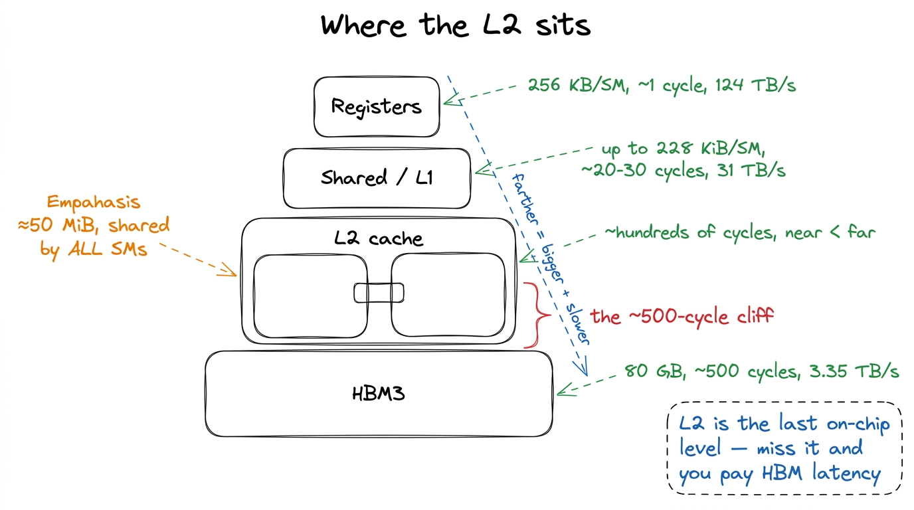
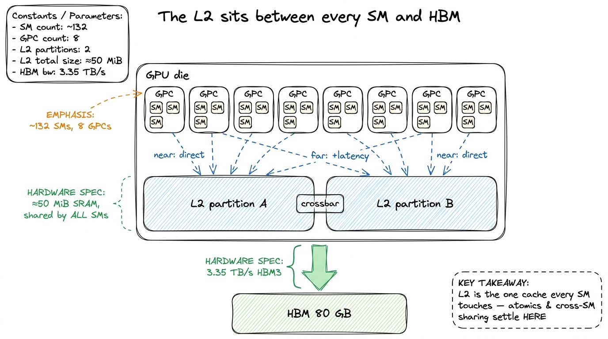
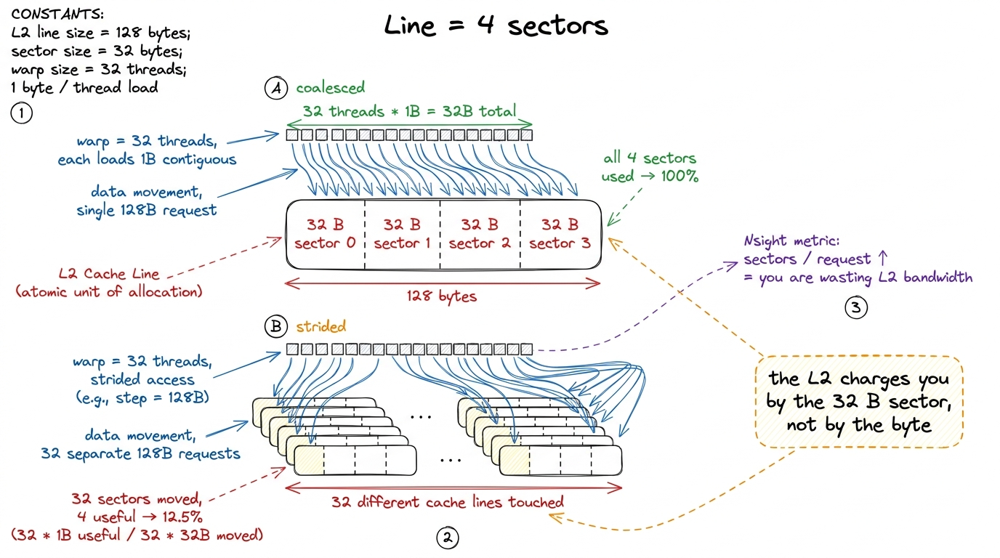
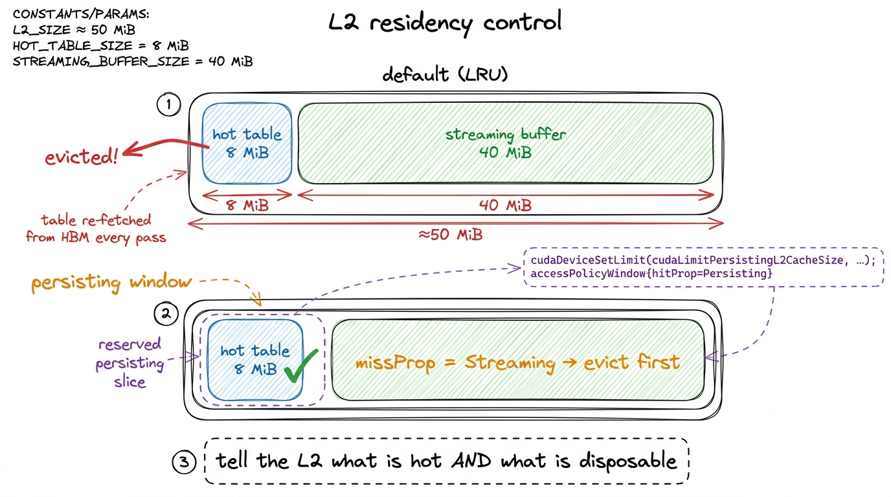
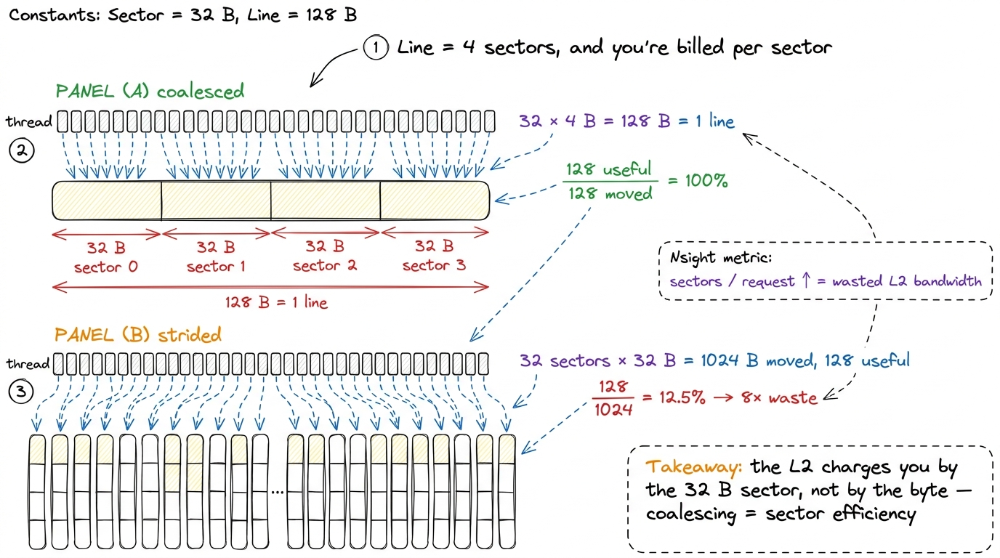
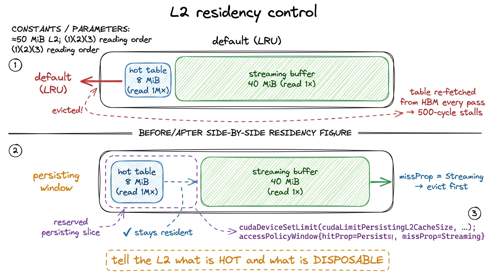
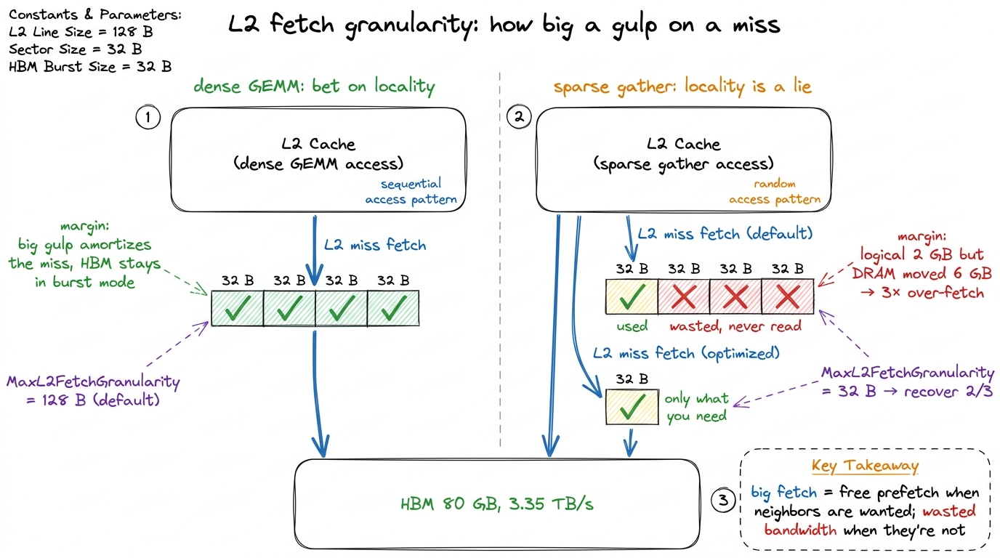
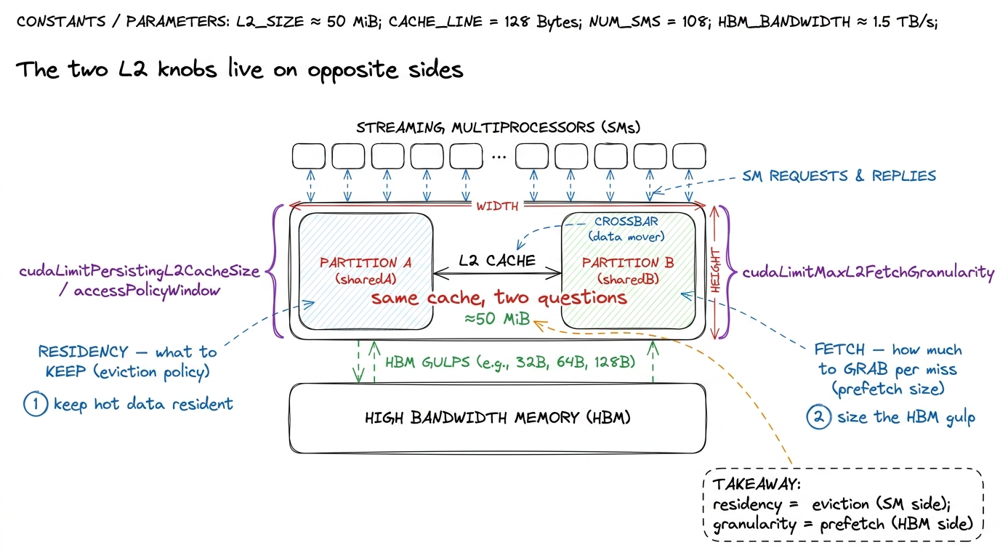

The L2 cache & partitions L2
Let me start with a question that sounds too simple to be interesting, and then show you it is not. When one of the H100's SMs wants a number that lives in HBM — the 80 GB of DRAM soldered next to the GPU die — where does that number actually go on its way in? It does not teleport into a register. It travels. And on that trip it passes through exactly one shared checkpoint that almost nobody thinks about until a profiler forces them to: the L2 cache.
This article is a tour of that checkpoint. By the end you should be able to answer, from first principles, why two kernels doing the identical arithmetic can differ 2× in wall-clock time, why a contended atomicAdd is slow but not that slow, why "coalescing" is really a statement about 32-byte chunks, and what the two real knobs — residency and fetch granularity — are actually doing to the hardware.
I put this early in the course, right after the register file and shared memory, because the L2 is the level people skip. Registers are yours to command. Shared memory is yours to command. Global memory you quickly learn to fear. The L2 sits quietly in between, doing its job whether you think about it or not — and it is precisely the level that explains the behavior of the other two.
First, the one idea to hold onto: memory is a hierarchy, and farther means slower
Before we can talk about the L2 at all, we need the picture it lives in. If you already have it, skim; if you're new, this is the foundation everything else hangs on.
A GPU does not have "memory." It has layers of memory, and the layers trade size against speed. This is not a GPU quirk — it is the oldest deal in computer architecture. You can have memory that is tiny and instant, or memory that is enormous and slow, but you cannot have both in the same silicon, so engineers build a staircase and hope your data spends most of its time near the top.
Let's put real H100 numbers on each step, because the whole article is about the size of the gaps.
- Registers. Private to a single thread. About 256 KB per SM, split among the threads running there. Latency: roughly one clock cycle. Effective bandwidth on the order of 124 TB/s. This is where your
float x = a * bactually happens. - Shared memory / L1. Co-located SRAM inside each SM, up to 228 KiB configurable, ~256 KiB total counting L1. Latency in the low tens of cycles, bandwidth around 31 TB/s. Private to a thread block.
- L2 cache. One shared SRAM for the whole die, about 50 MiB. Latency in the low hundreds of cycles. This is our subject.
- HBM (global memory). 80 GB of DRAM, 3.35 TB/s of bandwidth, and a latency of roughly 500 cycles.1 "500 cycles" is a round number, not a spec sheet promise. Real HBM latency swings with row-buffer state, queueing, and contention across the memory controllers. Treat it as "about an order of magnitude worse than L2, and two-plus orders worse than registers." The ratios are what matter, not the third significant figure.
Stare at those last two numbers. Registers answer in ~1 cycle. HBM answers in ~500. That is the whole game. A modern GPU spends enormous engineering effort — caches, coalescing, tiling, async copies — on one goal: don't touch HBM if you can help it, and when you must, touch it in big efficient gulps. The L2 is the last line of that defense. Miss it, and you fall off the die into the 500-cycle pit.

figure rendering · The memory hierarchy on an H100. The L2 is the last shared on-chip levOne cache for the whole die
Here is the property that makes the L2 different from everything above it. Registers are private to a thread. Shared memory is private to a thread block, physically living inside one SM. The L2 is the opposite of both: it is a single logical cache shared across all ~132 SMs on the chip, sitting on the HBM side of the memory system. On an H100 SXM5 it is about 50 MiB of SRAM.2 The exact figure NVIDIA quotes for the full GH100 is 50 MiB; shipping H100 SKUs with a few partitions disabled land slightly under. Treat "≈50 MiB" as the working number and never budget a kernel to the last kilobyte of it.
Fifty megabytes sounds small next to 80 GB of HBM — it is less than 0.07% of it. But that is the wrong comparison. Compare it to the on-chip world: 50 MiB dwarfs the combined 256 KiB of SMEM+L1 on any single SM by more than two hundred to one. In the economy of the die, the L2 is the big shared warehouse and the SMs are individual workshops with a shelf each.
Now, why does "shared by everyone" matter? Because it makes the L2 the one place where SMs meet. Three consequences fall straight out of that, and each is a thing you will eventually see in a profile:
- Cross-SM sharing settles here. If SM 7 writes a value and SM 90 later reads it, where do they rendezvous? Not in registers (private), not in shared memory (private to a block on one SM). They meet in the L2. It is the first level both of them can see.
- Atomics resolve here (we'll come back to this — it's the crossbar's job).
- "Does my working set fit?" is decided here. Take the union of every tile every SM is currently chewing on. If that union fits inside 50 MiB, you can read from HBM once and then live on-chip, re-reading from the L2 for free. If it doesn't fit, the SMs evict each other's data and you thrash — you pay the 500-cycle HBM latency again and again for data that "should" have been resident.
That last point is the whole reason two kernels with identical arithmetic can differ 2× in wall-clock. One keeps its hot data resident in L2; the other keeps knocking it out and re-fetching from HBM. Same FLOPs, wildly different time, and the difference is invisible unless you know to look at the L2.

figure rendering · The L2 is the last on-chip stop before HBM, split into two partitionsTwo partitions and a crossbar — the surprise in the middle
Here is the first thing that genuinely surprises people, and every honest H100 GEMM worklog confirms it the moment they profile: the L2 is not one monolithic block. It is physically split into two partitions. Each SM connects directly to one partition and reaches the other one indirectly, through a crossbar that bridges the two halves.
Let's stop and ask why that's surprising, because the surprise is the whole point. When we say "50 MiB L2, shared by all SMs," the mental image is a single flat pool that every SM reaches with equal cost. That image is wrong, and it's wrong in a way that shows up in measurements. The real layout is two ~25 MiB caches wearing one 50 MiB coat. Think of the die as a building with two wings and a hallway between them: your desk is in the west wing, so the west filing cabinet is a short walk, but reaching the east cabinet means crossing the hallway.
The consequence is a near/far latency asymmetry. A hit in your local partition is cheaper than a hit that has to hop the crossbar to the other partition.3 This is why L2 hit latency is usually quoted as a range, not a single number. A "near" hit and a "far" hit are both L2 hits — the data was on-chip either way — but the far one pays the crossbar traversal on top. That variance is real and shows up directly in Nsight Compute's L2 latency histograms as a bimodal-ish spread.
Can I control which partition my tile lands in? No — and this is worth being honest about. You cannot pin a tile to "your" partition from CUDA C. NVIDIA's addressing spreads cache lines across both partitions so that, on average, traffic is balanced and the crossbar stays busy but not saturated. You almost never model this explicitly. So why bother learning it? Because it explains things you'll otherwise find baffling: two kernels with the same measured L2 hit rate can have different effective L2 latency, purely because of how their access pattern happens to land relative to the partitions. It is one more reason measured latency beats theoretical latency every single time.
And the crossbar is not just an academic curiosity. It is central to the one job the L2 quietly owns for the whole chip: global atomics.
Atomics: why they're fast, and why they still serialize
When you issue an atomicAdd to global memory, here is the natural assumption: the value lives in HBM, so the read-modify-write must round-trip to HBM — read the old value (500 cycles), add, write it back (another long trip). That would make every atomic brutally slow.
But that's not what happens, and the reason is the L2. The read-modify-write is resolved in the L2, at the cache line that owns that address — not out in HBM. The L2 has the arithmetic hardware to do the add itself, right where the line lives. That's why an atomic on a hot counter costs a few hundred cycles instead of a thousand-plus. The data never leaves the die during the operation.
So atomics are cheap? Only when uncontended. Here's the flip side, and it follows straight from "one line owns the address." Suppose a thousand threads across forty SMs all atomicAdd to the same counter. That counter is one address, which lives in one cache line, which lives in one partition. Every one of those thousand adds must be applied to that single line, one at a time — you cannot add two numbers to the same location simultaneously and get the right answer. So they serialize. And some of those contenders are on the far side of the crossbar, so they pay the crossbar hop and wait their turn in line.
That is the mental model for atomic contention: not "HBM is slow" but "everyone is funneling through one L2 line, single-file, some of them across the hallway." The fix is always the same shape — reduce the funnel. Privatize per-block partial sums in shared memory, combine them once, and issue one atomic per block instead of one per thread. You're trading a thousand contended L2 adds for a handful.

figure rendering · The L2 resolves the read-modify-write of an atomic on-chip, which is wLet me make the "serialize" claim concrete with a picture of time, because "they serialize" is easy to say and easy to under-feel. Four adds that could have run at once instead run back-to-back, each waiting for the line to be free, and the far ones each carry a crossbar hop on top. If you lay those four operations on a horizontal time axis, the naive version is a long single-file train and the privatized version is four short bars that overlap — same four adds, a quarter of the wall-clock. That gap is the contention cost, drawn to scale.

figure rendering · The same four adds, drawn on a time axis. Contended atomics form a sinLines and sectors: the 128 B / 4 × 32 B granularity
Now let's zoom all the way into the L2 itself and ask the most basic question of all: what is the unit the cache deals in? It does not track individual bytes — that would need too much bookkeeping. It works in fixed-size chunks, and the exact sizes govern every coalescing decision you will ever make.
The L2 is organized in cache lines of 128 bytes. And — this is the detail that quietly runs the whole show — each 128 B line is divided into four 32-byte sectors. The sector, not the line, is the unit the memory system actually tracks for fetching and for hit/miss accounting.4 This is exactly why Nsight Compute shows you "sectors per request" as a first-class metric. A perfectly coalesced 32-thread warp reading floats touches all four sectors of one line cleanly. A badly strided warp touches one sector out of every line it hits and drags three dead sectors of traffic behind each useful one. If "sectors/request" is high, the memory system is telling you your accesses are scattered.
Let's derive why this matters with a by-hand example — no hand-waving. A warp is 32 threads. Say each thread reads one float, which is 4 bytes.
Case 1: contiguous. Thread 0 reads bytes 0–3, thread 1 reads bytes 4–7, … thread 31 reads bytes 124–127. Total span: 32 × 4 = 128 bytes — exactly one cache line, all four sectors used. The hardware coalesces all 32 requests into one transaction that moves 128 bytes, and every one of those bytes is wanted. Efficiency: 128 useful / 128 moved = 100%.
Case 2: strided. Now suppose the threads are laid out so each one lands in a different cache line — a common accident when you index a matrix by the wrong dimension. Thread 0 touches one sector of line 0, thread 1 one sector of line 1, and so on. Each thread pulls a whole 32-byte sector but uses only its 4 bytes. Traffic moved: 32 sectors × 32 B = 1024 bytes. Useful: 32 × 4 = 128 bytes. Efficiency: 128 / 1024 = 12.5%. You just paid 8× the bandwidth for the same result.
That factor of 8 is not a metaphor — it's the sector arithmetic. The hardware bills you per 32-byte sector, whether you use 4 bytes of it or 32. Coalescing "well" means making sure the sectors you drag along are sectors you actually wanted.
This is the sector-level version of the coalescing story from kernel 2 of the GEMM ladder — the reason a one-line change to how m and n map to threads took that kernel from 1.3% to 8.5% of cuBLAS.5 Different worklogs quote different starting percentages depending on clock, matrix size, and exactly what "naive" means — you'll see figures like 8.2% for a naive kernel elsewhere. The shape is universal and it's what matters: fixing the thread-to-address mapping is a sector-efficiency win worth a several-× jump, because it converts near-100%-wasted transactions into near-100%-useful ones. That win was, mechanically, nothing more exotic than moving from Case 2 toward Case 1 — from 12.5%-ish sector efficiency toward 100%.

figure rendering · A 128 B line is four 32 B sectors. The memory system bills per sector,Compression: a free lunch you didn't order (and can't rely on)
The H100's L2 carries data-compression circuitry — hardware that can compress certain data patterns on the fly, both while they sit in the cache and while they travel to and from HBM. When it fires, you move fewer physical bytes across the HBM boundary than you logically requested, which means effective bandwidth above the nominal 3.35 TB/s. The wire carries compressed bytes; the chip expands them.
Which data compresses? Low-entropy data — anything with structure or repetition. Buffers full of zeros. Activations right after a ReLU, which zeroes out roughly half its inputs. Sparse tensors. Anything where a run of identical bytes can be encoded compactly.
The honest caveat is the whole reason I'm flagging it as a caveat: you do not control this from a kernel, and it is data-dependent. So never design a kernel assuming compression will save you. Treat it as an occasional tailwind — a gap Nsight shows between "DRAM bytes read" and "logical bytes requested" — not a lever you pull. In the FP32 GEMM ladder it never mattered, because those kernels moved dense, high-entropy float tiles with no repetition to exploit. Compression pays off in memory-bound, low-entropy workloads, which is a different regime entirely — the three regimes is the article to reread if the words "memory-bound" don't yet feel concrete.
Residency control: teaching the L2 what to keep
Now we reach the first knob that genuinely earns its place in a worklog. Everything so far has been the L2 behaving automatically. This is where you get to steer it.
By default the L2 is a plain LRU-ish cache: it evicts whatever was Least Recently Used and keeps whatever was touched most recently. That policy is usually fine. But it has no semantic understanding of your data, and sometimes that hurts you badly.
Picture the failure. You have an 8 MiB embedding table that gets read a million times over the life of the kernel. You also have a 40 MiB streaming buffer that flows through exactly once. Both are competing for the same 50 MiB of L2. What does LRU do? Every time a fresh chunk of the streaming buffer arrives, it's "most recently used," so it stays — and it evicts part of your precious table to make room. The table, which you'll read a million more times, gets kicked out by a buffer you'll never read again. Next time you touch the table, it's gone: HBM latency, 500 cycles, for data that should have lived on-chip forever.
That's the pathology. Hopper (and Ampere before it) lets you fix it with L2 residency control. The idea: carve out a slice of the L2 as a persisting window, and tell the cache "treat accesses to this address range as high-priority — keep them resident, evict the streaming stuff instead." In CUDA that's a cudaStreamAttrValue with an accessPolicyWindow: a base pointer, a byte count, and a hitRatio/hitProp marking the window as persisting.
// Reserve a slice of L2 for persisting accesses, then
// mark [data, data + num_bytes) as high-priority ("persisting").
size_t persist_bytes = min(prop.persistingL2CacheMaxSize, (size_t)8 * 1024 * 1024);
cudaDeviceSetLimit(cudaLimitPersistingL2CacheSize, persist_bytes);
cudaStreamAttrValue attr = {};
attr.accessPolicyWindow.base_ptr = reinterpret_cast<void*>(hot_data);
attr.accessPolicyWindow.num_bytes = persist_bytes;
attr.accessPolicyWindow.hitRatio = 1.0f; // all of it, if it fits
attr.accessPolicyWindow.hitProp = cudaAccessPropertyPersisting;
attr.accessPolicyWindow.missProp = cudaAccessPropertyStreaming;
cudaStreamSetAttribute(stream, cudaStreamAttributeAccessPolicyWindow, &attr);Notice the missProp = cudaAccessPropertyStreaming line — it's easy to skim past, and it's half the point. It says: everything outside the window is transient, so evict it first. You're not only protecting the hot table; you're actively telling the L2 which traffic is disposable. Persisting says "keep this," streaming says "you may throw this away the moment you need room." Together they turn the cache from a blind LRU into one that knows your intent.6 There's a sharp failure mode here. If num_bytes exceeds what you reserved with persistingL2CacheMaxSize, or if two streams both claim persisting windows that overlap in reserved capacity, you get thrashing that is worse than the default policy — you've told the cache to protect more than it can hold, so it churns. Always read back prop.persistingL2CacheMaxSize and set hitRatio so the persisting footprint genuinely fits. And remember the L2 is shared: a persisting window you grab is capacity every other kernel on the device loses.
Used well, this converts a memory-bound kernel with a reused working set into something close to on-chip-resident — you read the hot data from HBM once and then live in the L2. Used carelessly, it steals capacity from everyone else and slows the whole launch down. It is a scalpel, not a hammer.

figure rendering · Residency control pins a reused working set in L2 and marks the rest aFetch granularity: how big a gulp on a miss
The second knob lives on the other side of the L2 — the HBM side. When the L2 misses and has to pull from HBM, it doesn't fetch a single byte. It fetches a quantum, and you can cap that quantum with cudaDeviceSetLimit(cudaLimitMaxL2FetchGranularity, ...), choosing an upper bound around 32, 64, or 128 bytes.
The trade-off is pure prefetch economics, and it comes down to one bet: do I believe in spatial locality here?
A large granularity (128 B) is a bet that says yes. "If you needed this sector, you'll probably want its neighbors soon, so grab the whole 128 B line while I'm at it." For a dense GEMM streaming contiguous tiles, that bet always pays — big fetches amortize the cost of the miss and keep HBM in its efficient burst regime, where it moves data fastest. Neighbors are wanted; fetching them ahead of time is free prefetch.
A small granularity (32 B) is the opposite bet, for sparse or scattered access — gather kernels, pointer-chasing, sparse-matrix formats, embedding lookups by random index. Here spatial locality is a lie: you want one 32 B sector and the neighbors are genuinely garbage to you. Fetching a full 128 B line to use 32 B of it burns three sectors of HBM bandwidth on data you will never read — the exact same 8×-style waste we saw for coalescing, but now on the HBM-to-L2 leg instead of the L2-to-SM leg.7 This limit is an upper bound and a hint, not a hard promise — the driver and hardware are free to fetch less. It is also coarse. On most dense workloads, leave it at the default; touching it without evidence usually does nothing or hurts. It earns its keep only when profiling shows a large gap between the bytes you logically touched and the DRAM bytes actually moved.
How do I know which bet I'm in? The profiler tells you, and the diagnostic is beautifully direct. If Nsight Compute reports you requested, say, 2 GB of logical loads but DRAM moved 6 GB, you are over-fetching by 3× — every scattered 32 B access is dragging a full 128 B line behind it. Dropping the granularity limit recovers the wasted 2/3. It's the same gap-between-logical-and-physical-bytes signal as the sector story, just measured one level further out.

figure rendering · On an L2 miss the cache pulls a fixed quantum from HBM. Dense contiguoPutting the two knobs in one picture
It's worth seeing both levers together, because they sit on opposite sides of the L2 and answer different questions. Residency control is about the SM side: given data that's already on-chip, what should the L2 bother keeping? Fetch granularity is about the HBM side: when we have to go to DRAM, how much do we grab per trip? One controls eviction; the other controls prefetch. Confusing them is the most common way people misremember this topic.

figure rendering · The two tunable L2 behaviors sit on opposite faces of the cache: residWhere this lands us
Let me be honest about how much the L2 matters directly, because the worklog voice demands it. In the FP32 GEMM ladder, the L2 was never the bottleneck. Those kernels sat at low single-digit percentages of L2 utilization — one profile showed 10.13% L2 utilization while the kernel was busy fighting over coalescing and shared-memory tiling. Even at 93.7% of cuBLAS, the binding constraint was compute throughput and SMEM scheduling, not L2 capacity. You do not reach for L2 knobs first. You reach for them when a genuinely memory-bound kernel has a working set that would fit on-chip if only the cache would hold still.
But — and this is the reason the L2 earns its own article — it is the structure that explains all the other numbers.
- Sector granularity is why coalescing matters. The 8× penalty in kernel 2 wasn't magic; it was 32 B sectors being billed whole.
- The crossbar is why atomics have the latency they do, fast because they settle in L2, serialized under contention because everyone funnels through one line.
- Residency control is the escape hatch when a memory-bound kernel's reused working set would fit in 50 MiB — the lever that turns re-fetching into resident.
- Fetch granularity is the HBM-side mirror of the same sector-efficiency story, for scattered access.
Keep the mental model small enough to hold in your head: the L2 is one ≈50 MiB SRAM shared by every SM, split into two partitions across a crossbar (near beats far), addressed in 128 B lines of four 32 B sectors (you're billed per sector), with compression as an occasional free tailwind, and two real levers — cudaLimitPersistingL2CacheSize for what to keep and cudaLimitMaxL2FetchGranularity for how much to fetch. Hold that picture and most L2 behavior becomes predictable rather than mysterious.
Next we drop one level further out and look at HBM itself — the 3.35 TB/s wall the L2 spends all its time trying to keep you from hitting, and the place where "memory-bound" stops being an abstraction and starts setting your ceiling.